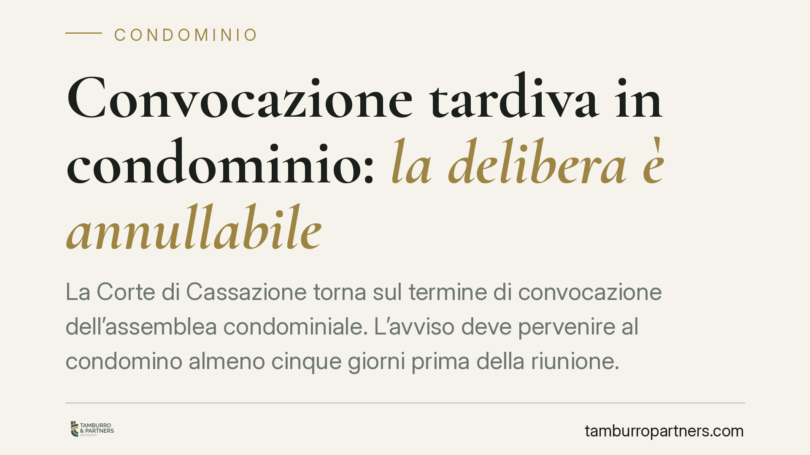

Convocazione tardiva in condominio: la delibera è annullabile
La Corte di Cassazione torna sul termine di convocazione dell'assemblea condominiale. L'avviso deve pervenire al condomino almeno cinque giorni prima della riunione. In caso contrario la delibera è annullabile. Punto decisivo è la prova della ricezione, che ricade sul condominio e passa, per la posta, anche dall'avviso di giacenza.

Il caso e la questione
Un condomino contesta la validità di una delibera assembleare sostenendo di aver ricevuto l'avviso di convocazione oltre il termine minimo previsto dalla legge. La Cassazione coglie l'occasione per chiarire due profili spesso trascurati: il momento in cui l'avviso si considera ricevuto e su chi grava l'onere di dimostrarlo.
La risposta della Corte è netta. La delibera è valida solo se l'avviso è pervenuto al condomino almeno cinque giorni prima della data fissata per l'adunanza. Non conta il giorno in cui l'amministratore spedisce la comunicazione, ma il giorno in cui essa entra nella sfera di conoscibilità del destinatario.
Inquadramento normativo
Il riferimento è l'art. 66 delle disposizioni di attuazione del codice civile. La norma impone che l'avviso di convocazione sia comunicato almeno cinque giorni prima della data fissata per l'assemblea in prima convocazione. La violazione di questo termine non rende la delibera nulla, ma annullabile: significa che il condomino assente o dissenziente deve impugnarla entro trenta giorni, altrimenti la decisione si consolida.
Sul momento di ricezione opera l'art. 1335 cod. civ., che disciplina la cosiddetta presunzione di conoscenza. L'avviso, come ogni atto ricettizio, si reputa conosciuto nel momento in cui giunge all'indirizzo del destinatario. Da qui il nodo pratico: quando la raccomandata non viene consegnata perché il destinatario è assente, l'atto si considera ricevuto alla data dell'avviso di giacenza depositato dall'operatore postale, e non a quella dell'eventuale ritiro successivo.
Implicazioni pratiche
Per l'amministratore la conseguenza è concreta. Non basta spedire l'avviso con congruo anticipo: occorre poter dimostrare che è arrivato nei termini. L'onere della prova della tempestiva ricezione grava sul condominio, non sul condomino che lamenta il vizio.
Questo sposta l'attenzione sulla documentazione. La ricevuta di spedizione, da sola, non prova nulla sulla data di arrivo. Serve l'avviso di ricevimento firmato oppure, in caso di mancata consegna, la prova del deposito e dell'immissione dell'avviso di giacenza nella cassetta postale del destinatario.
Per il singolo condomino il ragionamento vale a rovescio. Chi riceve la convocazione a ridosso dell'assemblea, o dopo, può contestare le delibere adottate. Ma deve muoversi in fretta: il termine di trenta giorni per l'impugnazione decorre dalla comunicazione del verbale per gli assenti e dalla data della delibera per i dissenzienti.
Attenzione a un equivoco frequente. Il ritardo nella convocazione non travolge automaticamente ogni decisione futura del condominio. Riguarda la singola delibera viziata. E se il condomino ha comunque partecipato senza sollevare obiezioni, il difetto può considerarsi sanato.
Cosa fare in concreto
- Verificate la data effettiva di ricezione, non quella di spedizione: contate cinque giorni pieni prima dell'assemblea in prima convocazione.
- Conservate ogni traccia documentale: avvisi di ricevimento, avvisi di giacenza, PEC. Se siete amministratori, senza prova della ricezione la delibera resta esposta all'impugnazione.
- Reagite entro trenta giorni se ritenete la convocazione tardiva: il termine è breve e perentorio, decorso il quale la delibera diventa inattaccabile su questo profilo.
- Valutate se partecipare comunque all'assemblea facendo mettere a verbale la contestazione sulla convocazione, così da preservare il diritto di impugnare.
- Chiedete una verifica preventiva delle modalità di convocazione quando l'ordine del giorno contiene decisioni economicamente rilevanti.
La pronuncia non introduce regole nuove, ma consolida un orientamento rigoroso sulla prova. Consigliamo agli amministratori di adottare procedure di convocazione tracciabili e ai condomini di annotare sempre la data di arrivo delle comunicazioni assembleari.
---
*Contributo informativo a cura di Tamburro & Partners - Avv. Giuseppe Tamburro. Non costituisce parere legale.*
Ogni condominio ha una storia a sé.
Se gestisci un'amministrazione e vuoi un confronto su una specifica questione condominiale, scrivi allo studio. Ti rispondiamo entro un giorno lavorativo.